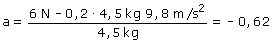
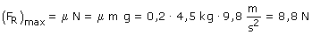

b) Si el bloque empieza a moverse irá hacia la derecha
y por tanto la aceleración
irá hacia la derecha
 Una valor negativo del módulo de la aceleración no tiene sentido, por tanto el bloque no se moverá porque la fuerza de rozamiento se lo impide. Para corroborar esta aseveración veamos el valor máximo de la fuerza de rozamiento:  Hay fuerza de rozamiento suficiente para anular la fuerza aplicada |